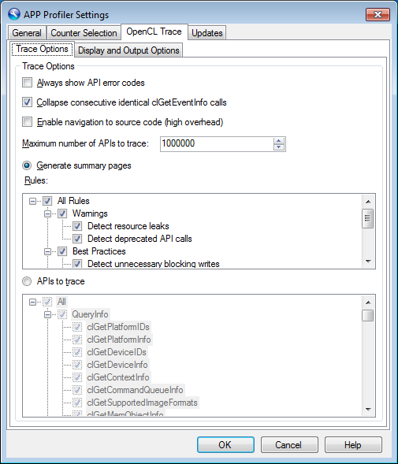
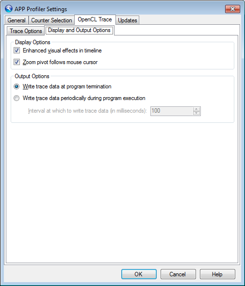

This page contains two subpages that allow you to configure the behavior of the profiler when it performs an application trace.
Trace Options Page

Trace Options
- Always show API error codes When checked, the profiler will always report the return codes for all OpenCL™ API calls. Some OpenCL™ API functions return an error code via a passed-in parameter. If the host application passes in NULL for that parameter, then the OpenCL™ runtime will not report an error code. The profiler will substitute a non-null parameter in this case and the API Trace will be able to show the return code.
- Collapse consecutive identical clGetEventInfo calls Some OpenCL™ applications will wait for certain Enqueue API calls to complete by continuously checking the status of the event returned by the Enqueue API. These applications do this by calling clGetEventInfo within a loop until the event status reaches a certain state (typically CL_COMPLETE). For these applications, the timeline and API trace could contain thousands of clGetEventInfo calls, making it difficult to easily analyze the timeline and trace data. In order to make analysis easier, the profiler can collapse consecutive clGetEventInfo calls that have the same parameters and return values, into a single entry in the timeline and API trace.
- Enable navigation to source code (high overhead) When checked, the profiler will generate a symbol information file from an application's .pdb file, containing one entry for each OpenCL™ API that is called. This symbol information file will allow the user to navigate from an item in the API Trace in the APP Profiler Timeline panel to the source location of the API call.
- Maximum number of APIs to trace This setting controls how many APIs will be traced over an application's lifetime. The default number of APIs to trace is 1 million. Limiting the number of APIs traced will help to prevent running out of memory while profiling. After the limit is reached, any additional APIs will not be traced, and the trace results will not include any additional information. Because of this, any information provided in the Summary pages may not be correct, as a complete trace is required in order to provide a fully-accurate application summary.
- Generate summary pages When checked, the profiler will automatically generate Summary Pages using the API trace and timeline data. You can further configure the summary pages by selecting rules to be used when generating the Warning(s)/Error(s) Summary page. Rules currently supported are shown in the table below:
| Rule | Description |
| Detect resource leaks | Tracks the reference count for all OpenCL™ objects, and reports any objects which are never released. |
| Detect deprecated API calls | Detects calls to OpenCL™ API functions that have been deprecated in recent versions of OpenCL™ |
| Detect unnecessary blocking writes | Detects unnecessary blocking write operations. |
| Detect non-optimized work size | Detect clEnqueueNDRangeKernel calls which specify a global or local workgroup size which is non-optimal for AMD Hardware. |
| Detect non-optimized data transfer | 1. Detect Non-Fusion APU access to Device-Visible Host Memory directly.
2. Detect Host-Visible Device Memory read back to CPU directly. |
| Detect redundant synchronization | Detect redundant synchronization which results in low host and device utilization |
| Detect failed API calls | Detect OpenCL™ API calls that do not return CL_SUCCESS.
Some of the return codes may not be detected unless Always show API error codes option is checked. |
- APIs to trace When checked, you can tell the profiler which APIs you want it to trace. By limiting the APIs to trace, you can focus attention on particular APIs when analyzing trace data, while also reducing the overhead of performing a trace. Because a full trace is required in order to generate the Summary pages, this option is mutually exclusive with the Generate summary pages option. Use the treeview below the option to select which APIs the profiler should trace.
Display and Output Options Page

Display Options
- Enhanced visual effects in timeline When checked, items in the API Trace timeline will be drawn using rounded corners and gradient colors. When unchecked, items will be drawn with square corners and solid colors.
- Zoom pivot follows mouse cursor When checked, the zoom pivot line in the timeline will automatically follow the mouse cursor as the mouse is moved. When unchecked, the zoom pivot line remains in a fixed location, and you must click somewhere within the timeline to reposition it.
Output Options
- Write trace data at program termination When selected, the profiler will wait until the application terminates before writing any trace data to disk.
- Write trace data periodically during program execution When selected, the profiler will periodically write all queued up trace data to disk during program execution. Note: this mode may introduce extra overhead to the profile data which will appear as periodic gaps in the timeline each time the queued-up data is written to disk
- Interval at which to write trace data (in milliseconds) This specifies how often any queued-up profile data will be written to disk.